The Arbitrary Waveform Generator (or Wavegen) generates electronic waveforms. The waveforms can be either repetitive or single-shot. Different triggering sources can be used: internal (from other devices) or external.
The resulting waveforms can be input into a device being tested and analyzed with the Oscilloscope as they progress through the device. This is useful for confirming the proper operation of the device or pinpointing a fault in the device.
The main window has three areas: the control toolbar at the top, the configuration form(s) on the left side, and the signal preview plot(s) on the right side.
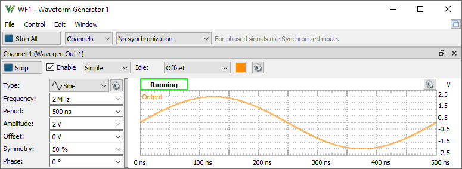
See Menu in Common Interfaces.
The Edit menu lets you copy or swap the channels configurations.
Run All / Stop All button: starts or stops the selected signal generators.
Channels: selects the channel(s) to be controlled. For every channel you select, a configuration form and a signal preview plot are displayed.
* Available with Electronics Explorer board and Analog Discovery 3, Analog Discovery 2 after selecting 6th configuration under Settings/ Device Manager.
With DPS3340 the channels control the supply outputs in voltage or current limitation mode.
For every channel you select, a signal preview plot is displayed.
The plot options menu on the top-right edge (next to the common plot options) contains controls to scale the plot waveforms. Having the Scale option in Full mode allows manual adjustment of time. The vertical scaling in Manual mode can be adjusted as well.
A horizontal left-button mouse drag on the plot changes the start position, and a right-button mouse drag changes the horizontal domain of the preview. A vertical left-button mouse drag on the left/right side changes the modulator/voltage position, and a right-button mouse drag changes the vertical range of the preview.
The actual output might differ from the preview depending on external load, especially at high frequencies.
Run/Stop button: starts/stops the signal generation for the selected channel. The waveform generator channel can be started individually.
Enable button: enables or disables the output.
See Simple, Basic, Play, Sweep and Modulation configuration modes.
Idle output: selects the output while not running (Waiting, Ready, Stopped, or Done states).Supply*: Selects between voltage and current waveform generator.
Limitation*: Specifies the current or voltage limitation.
Amplification: Specifies the external amplification of the signal. The voltage and offset levels will be adjusted taking in consideration this.
Units: Selects amplitude units between: Peak, Peak to Peak, RMS Volts, dBṼ (reference to 1Ṽ sine wave, 20*Log10(Ṽ)), dBu (reference to 0.775Ṽ sqrt(1.2) sine wave, 20*Log10(Ṽ/0.775)), dBm (reference to 0.224Ṽ sqrt(0.1) sine wave, relative to 1mW on 50Ω load).
* Available with Electronics Explorer, DPS3340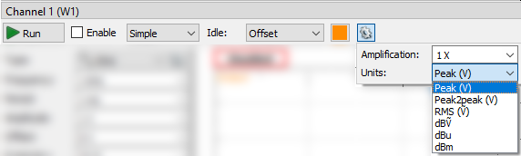
For every channel you select, a configuration mode will be displayed. The custom and play waveforms are shared between the channels and configuration modes.
The Simple configuration mode for a simple standard signal configuration.
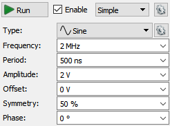
Type: represents the standard signal types: DC, Sine, Square, Triangle, Ramp-Up, Ramp-Down, Noise, Trapezium, and Sine-Power. Under the options menu, custom waveforms can be created and files imported as pattern or play data.
For ADP3X50, EclypseZ7 and newer devices the Oscilloscope inputs (raw ADC, averaged or filtered samples) can be used as source signal, amplitude or frequency modulation. These can be configured in the Scope interface. The Filter channels are exposed by the green arrow under the last real channel.
For the Noise signal, the Frequency represents the DAC update rate, and the Symmetry and Phase parameters are disabled.
The Sine-Power signal is a sine signal where the power attribute is 0. For higher power attributes, the waveform tends to have a square shape. The function for the power attribute is the following:
if (power > 0) = Sin(x) ( 100 / (100-power) )
if (power < 0) = Sin(x) ( (100+power) / 100 )
Frequency, Period, Amplitude, Offset, Symmetry, and Phase allow you to modify signal parameters.
Trigger, Wait, Run, and Repeat settings let you generate burst signals. See States for more information.
The Basic configuration mode for standard signal configuration.
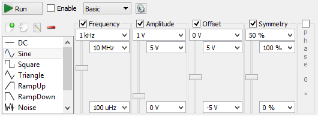
Signal icons represent the standard signal type.
Frequency, Period, Amplitude, Offset, Symmetry, and Phase sliders let you easily modify signal values between the maximum and minimum limits. These limits can be adjusted using the combo boxes at the top and bottom of the sliders.
Trigger, Wait, Run, and Repeat settings let you generate burst signals. See States for more information.
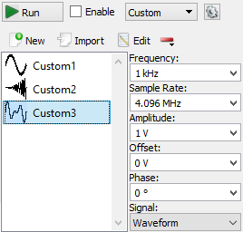
New button lets you create and edit a new custom waveform. See Editor for more information.
Import button lets you load a waveform from file. See Import file for more information.
Edit button lets you edit the currently selected signal.
Remove/Clear buttons lets you remove the selected or all items.
Frequency, Sample Rate, Amplitude, Offset, and Phase let you modify the signal parameters.
The Signal option lets you select between Waveform and Pattern for Custom and Play. The Waveform is intended for analog waveforms for precise signal frequency and the Pattern is for pulse patterns providing stable sample rate.
*With Analog Discovery 1 and 2 the stable rate requires power of two number of samples up to the device buffer size, 4096 with the first configuration.
Trigger, Wait, Run, and Repeat settings let you generate burst signals. See States for more information.
The play mode lets you generate a large number of samples at a lower rate, depending on the system, up to 1 Msps. If the device buffer is emptied, the player will lose samples. If this problem occurs, stop other instruments or quit applications that burden the computer or reduce the player frequency.
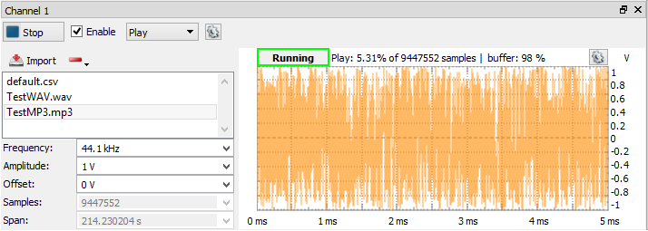
Import button lets you import a large number of samples (100M on 64bit and 10M on 32bit system) from data files to play. See Import file for more information.
Remove button lets you remove the selected or all items.
Frequency, Amplitude, and Offset let you modify signal parameters.
The Signal option lets you select between Waveform and Pattern. The Waveform is intended for analog waveforms for precise signal frequency and the Pattern is for pulse patterns providing stable sample rate.
When the PC or the USB is busy, the playback might be jumpy. In this case, try stopping the other running instruments or reduce the playback frequency.
The player can also be used in Modulation mode for carrier, amplitude, or frequency modulation.
Select Sweep configuration mode for easy setup of sweep and damp signals.
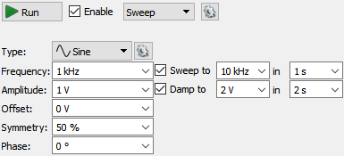
The Sweep and Damp checkboxes enable or disable these modes.
In sweep mode, the signal frequency changes linearly from the first value to the second in the specified time.
In damp mode, the signal amplitude changes linearly from the first level to the second in the specified time.
Type can be a standard or custom. Using the options menu after the signal type, custom signals can be generated or imported from a file. These are added to the type list.
Frequency, Amplitude, Offset, Symmetry, and Phase let you modify signal parameters.
Trigger, Wait, Run, and Repeat settings let you generate burst signals. See States for more information.
Select the Modulation configuration mode for setting complex configurations.
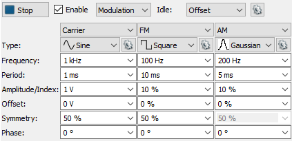
Trigger, Wait, Run, and Repeat settings let you generate burst signals. See States for more information.
Carrier, FM/PM and AM/SUM are configured in separate columns.
Type can be a standard or custom. Using the options menu after the signal type, custom signals can be generated or imported from a file. These are added to the type list.
Configurations consist of:
For FM and AM (Frequency and Amplitude Modulations) the limits for Index + Offset are ±200%.
The PM, PMD, SUM and SUMV options are available with ADP3X50, Eclyspe Z7, Analog Discovery 3.
For PM (Phase Modulation) or PMD (expressed in degrees) the limits are ±100% or ±180°.
For SUM or SUMV (expressed in Volts) the limits are ±400% or in Volts the Offset±Amplitude can be up to four times the Carrier Amplitude.
See Generator States and Idle output for more information.
Using the (Trigger), Wait, Run, and Repeat settings, burst signals can be generated.
The following screenshot shows a burst signal.
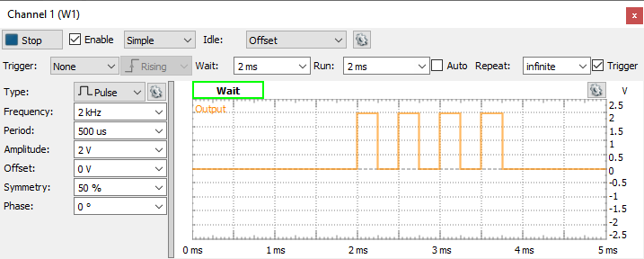
The Editor lets you easily create arbitrary signal shapes, as well as custom carrier signals and modulators.
To launch the Custom editor from any configuration form, select the New signal option or select Edit for an existing custom signal.
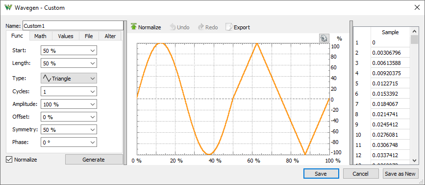
Function generation has the following parameters:
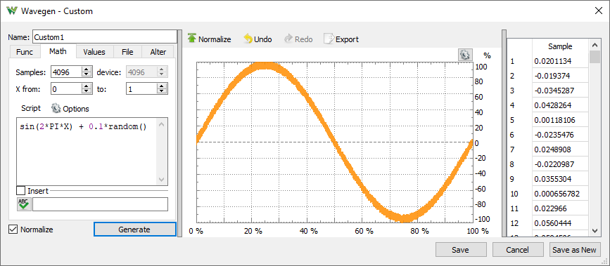
Math lets you generate signals from mathematical functions.
Example functions:
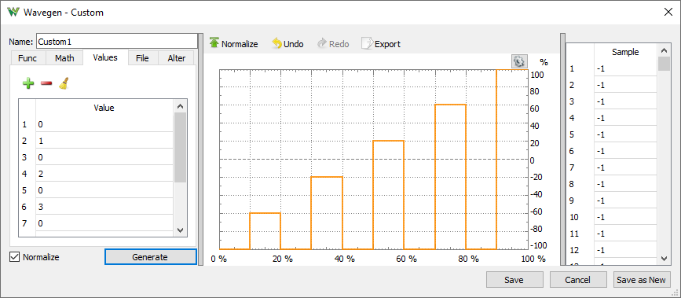
Values can be edited in the data tab on the right side. Copy, paste, and multiple editing is supported.
File tab lets you import data from a file and place it in the buffer at a specified starting position and for a specified length. See Import File.
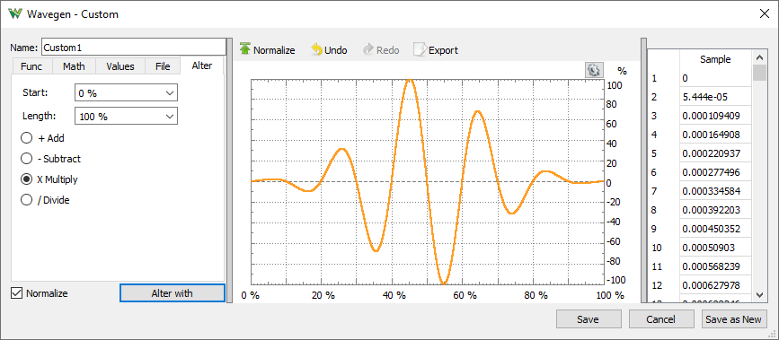
Alter tab lets you add, subtract, multiply, or divide the current waveform with another one, like adding noise, tone, or damping by multiplication.
To import a data file, select Import and then select File.
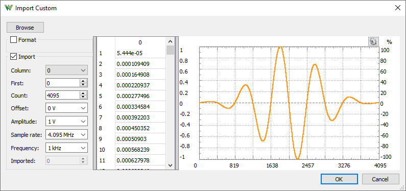
Browse button opens a dialog box where you can select a different file to load. The supported files are CSV (comma separated values), TXT (tab delimited values), and audio files. These are WAV (Waveform Audio) and other audio/video formats supported by the operating system like: MP3, WMA, AVI.
In case the import does not detect the text file coding properly, adjust the options in Format group to specify the:
Values area
Plot area shows the selected data range.